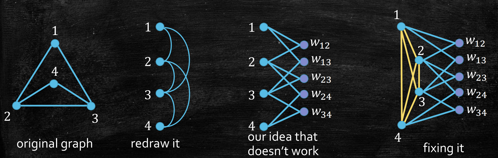

Last updated on June 17, 2025 am
本文为SJTU-AI2615算法课程的期末复习 ，主要复习内容为动态规划、网络流、线性规划、NP完全 。
动态规划
DP 的一般方法
找到子问题（或从递归解法合并重复子问题）
确认在 DAG 中，并找到 DAG 的拓扑序
按照拓扑序，求解子问题并存储
DP 算法设计的关键：子问题定义 & 状态转移方程
正确性证明 ：数学归纳法（按拓扑序）优先级队列优化 ：掌握类似维护 PLL 的基础方法即可
DP 基础问题示例
斐波那契数列
子问题定义 ：f i b [ i ] fib[i] f ib [ i ] i i i 状态转移 ：f i b [ i ] = f i b [ i − 1 ] + f i b [ i − 2 ] fib[i] = fib[i - 1] + fib[i - 2] f ib [ i ] = f ib [ i − 1 ] + f ib [ i − 2 ] 拓扑序 ：从 1 1 1 n n n 整体算法 ：
DAG 最短路径
问题描述 ：
输入 ：有向无环图 G G G s s s w ( e ) w(e) w ( e ) 输出 ：s s s
子问题定义 ：d i s t [ u ] dist[u] d i s t [ u ] s s s u u u 状态转移 ：d i s t [ u ] = min ( v , u ) ∈ E { d i s t [ v ] + w ( v , u ) } dist[u] = \min_{(v, u) \in E} \{dist[v] + w(v, u)\} d i s t [ u ] = min ( v , u ) ∈ E { d i s t [ v ] + w ( v , u )} 拓扑序 ：即为原图 G G G 整体算法 ：
时间复杂度 ：O ( ∣ V ∣ + ∣ E ∣ ) O(|V| + |E|) O ( ∣ V ∣ + ∣ E ∣ ) 正确性证明 ：数学归纳法（按拓扑序）
最长递增子序列
问题描述 ：
输入 ：一个序列 a 1 , a 2 , … , a n a_1, a_2, \ldots, a_n a 1 , a 2 , … , a n 输出 ：最长递增子序列长度（LIS）的长度
LIS ：a i 1 < a i 2 < ⋯ < a i k a_{i_1} < a_{i_2} < \cdots < a_{i_k} a i 1 < a i 2 < ⋯ < a i k i 1 < i 2 < ⋯ < i k i_1 < i_2 < \cdots < i_k i 1 < i 2 < ⋯ < i k
子问题定义 ：l i s [ i ] lis[i] l i s [ i ] a i a_i a i 状态转移 ：l i s [ i ] = max a j < a i , j < i { l i s [ j ] + 1 } lis[i] = \max_{a_j < a_i, j < i} \{lis[j] + 1\} l i s [ i ] = max a j < a i , j < i { l i s [ j ] + 1 } 拓扑序 ：从 1 1 1 n n n 整体算法 ：
编辑距离
问题描述 ：
输入 ：字符串 X 和 Y输出 ：将 X 转换为 Y 的最小操作次数（插入、删除、替换）
问题转化 ：找到最好的对齐方式
子问题定义 ：E D [ i , j ] ED[i, j] E D [ i , j ] X[1..i] 和 Y[1..j] 之间的编辑距离状态转移 ：考虑 X 和 Y 结尾的一位
E D [ i , j ] = min { E D [ i − 1 , j − 1 ] + 1 x i ≠ y j 替换 E D [ i , j − 1 ] + 1 插入 E D [ i − 1 , j ] + 1 删除 ED[i, j] = \min
\begin{cases}
\, ED[i-1, j-1] + 1_{x_i \neq y_j} & \text{替换} \\
\, ED[i, j-1] + 1 & \text{插入} \\
\, ED[i-1, j] + 1 & \text{删除}
\end{cases}
E D [ i , j ] = min ⎩ ⎨ ⎧ E D [ i − 1 , j − 1 ] + 1 x i = y j E D [ i , j − 1 ] + 1 E D [ i − 1 , j ] + 1 替换 插入 删除
背包问题
问题描述 ：
输入 ：n n n i i i c i c_i c i v i v_i v i W W W 输出 ：选择物品子集，使得总代价不超过 W W W
子问题定义 ：f [ i , w ] f[i, w] f [ i , w ] i i i w w w 状态转移 ：考虑是否选择第 i i i
f [ i , w ] = max { f [ i − 1 , w ] , f [ i − 1 , w − c i ] + v i } f[i, w] = \max \{ f[i − 1, w], f[i − 1, w − c_i] + v_i \}
f [ i , w ] = max { f [ i − 1 , w ] , f [ i − 1 , w − c i ] + v i }
时间复杂度 ：O ( n W ) O(nW) O ( nW )
优先级队列优化示例
连续 k 个数中的最大值
问题描述 ：
输入 ：数组 a 1 , a 2 , … , a n a_1, a_2, \ldots, a_n a 1 , a 2 , … , a n k k k 输出 ：每个长度为 k k k
思路 ：维护一个单调递减队列 Potential Largest List（PLL），保存潜在最大值
队列性质 ：队首元素是当前窗口最大值，队列中元素按索引递增且值递减更新步骤 ：
移除过期元素 ：若队首元素索引超出窗口左边界，弹出队首维护单调性 ：从队尾开始，移除所有值小于当前元素 a i a_i a i 插入当前元素 ：将当前元素索引加入队尾记录结果 : 当 i ≥ k − 1 i \ge k - 1 i ≥ k − 1
整体算法 ：
时间复杂度 ：O ( n ) O(n) O ( n )
最长递增子序列
优化思路 ：维护一个潜在前缀列表 s m sm s m s m [ l e n ] sm[len] s m [ l e n ] l e n len l e n
算法步骤 ：
初始化 s m [ 0 ] = 0 sm[0] = 0 s m [ 0 ] = 0
对每个 a i a_i a i
二分查找使得 a i > s m [ l e n ] a_i > sm[len] a i > s m [ l e n ] l e n len l e n
更新 s m [ l e n + 1 ] = a i sm[len + 1] = a_i s m [ l e n + 1 ] = a i
输出更新过的最大 l e n len l e n
时间复杂度 ：O ( n log n ) O(n \log n) O ( n log n )
图中 DP 示例
所有点对最短路径问题（Floyd-Warshall）
问题描述 ：
输入 ：带权有向图 G ( V , E ) G(V,E) G ( V , E ) d ( u , v ) d(u,v) d ( u , v )
输出 ：所有顶点对之间的最短路径距离 d i s t ( u , v ) dist(u,v) d i s t ( u , v )
子问题定义 ：d i s t [ k , u , v ] dist[k,u,v] d i s t [ k , u , v ] k k k u u u v v v 状态转移 ：
d i s t [ k , u , v ] = min { d i s t [ k − 1 , u , v ] , d i s t [ k − 1 , u , k ] + d i s t [ k − 1 , k , v ] } dist[k,u,v] = \min\{ dist[k-1, u, v], dist[k-1, u, k] + dist[k-1, k, v]\}
d i s t [ k , u , v ] = min { d i s t [ k − 1 , u , v ] , d i s t [ k − 1 , u , k ] + d i s t [ k − 1 , k , v ]}
拓扑序 ：k k k 1 1 1 n n n 整体算法 ：
时间复杂度 ：O ( ∣ V ∣ 3 ) O(|V|^3) O ( ∣ V ∣ 3 )
旅行商问题
问题描述 ：
输入 ：完全加权无向图 G G G d ( u , v ) > 0 d(u,v)>0 d ( u , v ) > 0 输出 ：访问所有顶点恰好一次的最小权重回路
子问题定义 ：f [ S , u , v ] f[S, u, v] f [ S , u , v ] S ⊂ V S \subset V S ⊂ V u u u v v v
或固定起点 u u u f [ S , v ] f[S, v] f [ S , v ]
状态转移 ：
f [ S , u , v ] = min k ∈ S { f [ S − { k } , u , k ] + d ( k , v ) } f[S, u, v] = \min_{k \in S} \{f[S - \{k\}, u, k] + d(k, v)\}
f [ S , u , v ] = k ∈ S min { f [ S − { k } , u , k ] + d ( k , v )}
拓扑序 ：按集合 S S S 时间复杂度 ：O ( n 2 2 n ) O(n^22^n) O ( n 2 2 n )
树上的最大独立集
问题描述 ：
输入 ：无向树 T = ( V , E ) T=(V,E) T = ( V , E ) 输出 ：顶点集合 S ⊆ V S \subseteq V S ⊆ V ∣ S ∣ |S| ∣ S ∣
子问题定义 ：f [ u ] f[u] f [ u ] u u u
状态转移 ：
f [ v ] = max { ∑ u ∈ c h i l d r e n ( v ) f [ u ] , 1 + ∑ u ∈ g r a n d c h i l d r e n ( v ) f [ u ] } f[v] = \max \left\{ \sum_{u \in children(v)} f[u], 1 + \sum_{u \in grandchildren(v)} f[u] \right\}
f [ v ] = max ⎩ ⎨ ⎧ u ∈ c hi l d re n ( v ) ∑ f [ u ] , 1 + u ∈ g r an d c hi l d re n ( v ) ∑ f [ u ] ⎭ ⎬ ⎫
网络流
问题及符号定义
最大流问题 ：
输入 ：
有向图 G ( V , E ) G(V, E) G ( V , E ) s s s t t t
对每条边 e ∈ E e \in E e ∈ E c ( e ) c(e) c ( e )
输出 ：从 s s s t t t
规范定义 ：
流 ：f : E → R ≥ 0 f: E \to \mathbb{R}_{\ge 0} f : E → R ≥ 0 e ∈ E e \in E e ∈ E f ( e ) f(e) f ( e ) 容量约束 ：对每条边 e ∈ E e \in E e ∈ E f ( e ) ≤ c ( e ) f(e) \le c(e) f ( e ) ≤ c ( e ) 流量守恒 ：对任意中间节点 u ∈ V ∖ { s , t } u \in V \setminus \{s, t\} u ∈ V ∖ { s , t } ∑ ( v , u ) ∈ E f ( v , u ) = ∑ ( u , w ) ∈ E f ( u , w ) \sum_{(v, u) \in E} f(v, u) = \sum_{(u, w) \in E} f(u, w) ∑ ( v , u ) ∈ E f ( v , u ) = ∑ ( u , w ) ∈ E f ( u , w ) 总流量 ：v ( f ) = ∑ ( s , v ) ∈ E f ( s , v ) v(f) = \sum_{(s, v) \in E} f(s, v) v ( f ) = ∑ ( s , v ) ∈ E f ( s , v )
剩余网络 ：G f G^f G f E f E_f E f
正向边 ：若原边 ( u , v ) (u, v) ( u , v ) f ( u , v ) < c ( u , v ) f(u, v) < c(u, v) f ( u , v ) < c ( u , v ) c ( u , v ) − f ( u , v ) c(u, v) - f(u, v) c ( u , v ) − f ( u , v )
反向边 ：若原边 ( v , u ) (v, u) ( v , u ) f ( v , u ) > 0 f(v, u) > 0 f ( v , u ) > 0 f ( v , u ) f(v, u) f ( v , u )
重要定理
整数流定理（Flow Integrality Theorom） ：若网络所有边的容量均为整数，则存在整数最大流最大流最小割定理（Max-Flow-Min-Cut Theorom） ：最大流等于最小割，即max f v ( f ) = min L , R c ( L , R ) \max_{f} v(f) = \min_{L, R} c(L, R)
f max v ( f ) = L , R min c ( L , R )
Lemma 1 ：对任意流 f f f { L , R } \{L, R\} { L , R } v ( f ) ≤ c ( L , R ) v(f) \le c(L, R) v ( f ) ≤ c ( L , R ) Lemma 2 ：存在一个割 { L , R } \{L, R\} { L , R } f f f v ( f ) = c ( L , R ) v(f) = c(L, R) v ( f ) = c ( L , R )
其中 L L L G f G^f G f s s s
求解最大流 f f f G f G^f G f 令 L L L G f G^f G f s s s R R R V ∖ L V \setminus L V ∖ L 返回 { L , R } \{L, R\} { L , R }
应用题型
比赛胜负问题
二分图最大匹配问题
问题描述 ：
输入 ：二分图 G = ( A , B , E ) G = (A, B, E) G = ( A , B , E )
A A A B B B E ⊆ A × B E \subseteq A \times B E ⊆ A × B
输出 ：最大匹配 M ⊆ E M \subseteq E M ⊆ E
∀ u ∈ A ∪ B \forall u \in A \cup B ∀ u ∈ A ∪ B e ∈ M e \in M e ∈ M u u u ∣ M ∣ |M| ∣ M ∣
算法及证明
Ford-Fulkerson 方法
算法步骤 ：
初始化 ：设初始流 f ( e ) = 0 f(e) = 0 f ( e ) = 0 G f G_f G f 迭代过程 ：
寻找增广路径 ：在 G f G_f G f s → t s \rightarrow t s → t p p p 计算瓶颈容量 ：找出路径 p p p b b b 更新流量 ：对路径 p p p ( u , v ) (u, v) ( u , v )
若为正向边，增加流量：f ( u , v ) f(u, v) f ( u , v ) b b b
若为反向边，减少原边流量：f ( v , u ) f(v, u) f ( v , u ) b b b
更新残留网络 ：根据新流量 f f f G f G_f G f
终止条件 ：当残留网络中不存在 s → t s \to t s → t f f f
正确性证明 ：由最大流最小割定理保证终止性 ：若所有容量均为有理数，会终止；若存在无理数，不一定终止时间复杂度 ：O ( ∣ E ∣ ⋅ f max ) O(|E| \cdot f_{\max}) O ( ∣ E ∣ ⋅ f m a x )
最多 f max f_{\max} f m a x O ( ∣ E ∣ ) O(|E|) O ( ∣ E ∣ )
Edmonds-Karp 算法
关键性质 ：
G f G^f G f u u u d i s t ( u ) dist(u) d i s t ( u ) 每次增广导致 G f G^f G f G G G
原边 ( u , v ) (u, v) ( u , v ) d i s t ( u ) dist(u) d i s t ( u ) 2 2 2
d i s t i + j ( u ) = d i s t i + j ( v ) + 1 ≥ d i s t i ( v ) + 1 = d i s t i ( u ) + 2 \mathrm{dist}^{i + j}(u) = \mathrm{dist}^{i + j}(v) + 1 \ge \mathrm{dist}^i(v) + 1 = \mathrm{dist}^i(u) + 2 dist i + j ( u ) = dist i + j ( v ) + 1 ≥ dist i ( v ) + 1 = dist i ( u ) + 2
时间复杂度 :
每条边成为关键边的次数：O ( ∣ V ∣ ) O(|V|) O ( ∣ V ∣ )
总迭代次数：O ( ∣ V ∣ ⋅ ∣ E ∣ ) O(|V| \cdot |E|) O ( ∣ V ∣ ⋅ ∣ E ∣ )
每次迭代的时间：O ( ∣ E ∣ ) O(|E|) O ( ∣ E ∣ )
总时间复杂度 ：O ( ∣ V ∣ ⋅ ∣ E ∣ 2 ) O(|V| \cdot |E|^2) O ( ∣ V ∣ ⋅ ∣ E ∣ 2 )
Dinic 算法
核心思路 ：每一轮将 t t t d i s t ( t ) dist(t) d i s t ( t ) 1 1 1 相关概念 ：
分层图 (Level Graph) ：仅保留从源点出发按 BFS 层数递增的边阻塞流 (Blocking Flow) ：分层图中无法再找到增广路径的流
算法步骤 ：
初始化流 f f f G f G^f G f G G G
重复以下步骤，直到 d i s t ( t ) = ∞ dist(t) = \infty d i s t ( t ) = ∞
从 G f G^f G f G L f G_L^f G L f
用 DFS 在分层图中寻找阻塞流
更新流 f f f G f G^f G f
关键性质 ：
每次 DFS 搜索后至少一条边被移除（关键边或回溯边）
G L f G_L^f G L f d i s t i ( t ) \mathrm{dist}^i(t) dist i ( t ) d i s t i + 1 ( t ) > d i s t i ( t ) \mathrm{dist}^{i + 1}(t) > \mathrm{dist}^i(t) dist i + 1 ( t ) > dist i ( t )
时间复杂度 ：
每次搜索最多步数：O ( ∣ V ∣ ) O(|V|) O ( ∣ V ∣ )
每次迭代中搜索次数：O ( ∣ E ∣ ) O(|E|) O ( ∣ E ∣ )
每次迭代的时间：O ( ∣ V ∣ ⋅ ∣ E ∣ ) O(|V| \cdot |E|) O ( ∣ V ∣ ⋅ ∣ E ∣ )
迭代次数：O ( ∣ V ∣ ) O(|V|) O ( ∣ V ∣ )
总时间复杂度 ：O ( ∣ V ∣ 2 ⋅ ∣ E ∣ ) O(|V|^2 \cdot |E|) O ( ∣ V ∣ 2 ⋅ ∣ E ∣ )
Hopcroft-Karp-Karzanov 算法
算法思想 ：Dinic 算法应用于二分图最大匹配问题（所有边容量为1）
时间复杂度 ：O ( ∣ E ∣ ⋅ ∣ V ∣ ) O(|E| \cdot \sqrt{|V|}) O ( ∣ E ∣ ⋅ ∣ V ∣ )
寻找阻塞流 ：
由于边容量均为 1 1 1
每次寻找阻塞流的时间复杂度为 O ( ∣ E ∣ ) O(|E|) O ( ∣ E ∣ )
迭代轮数 ：
对每个非 s s s t t t G f G^f G f 1 1 1
G f G^f G f G f G^f G f ∣ V ∣ \sqrt{|V|} ∣ V ∣ G f G^f G f d i s t ( t ) dist(t) d i s t ( t ) ∣ V ∣ \sqrt{|V|} ∣ V ∣ G f G^f G f ∣ V ∣ \sqrt{|V|} ∣ V ∣ 从而再过 ∣ V ∣ \sqrt{|V|} ∣ V ∣ 2 ∣ V ∣ 2 \sqrt{|V|} 2 ∣ V ∣
算法总结
算法
时间复杂度
核心思想
适用场景
Ford-Fulkerson
O ( ∣ E ∣ ⋅ f m a x ) O(\vert E \vert \cdot f_{max}) O ( ∣ E ∣ ⋅ f ma x ) 任意增广路径
理论分析
Edmonds-Karp
O ( ∣ V ∣ ⋅ ∣ E ∣ 2 ) O(\vert V \vert \cdot \vert E \vert ^2) O ( ∣ V ∣ ⋅ ∣ E ∣ 2 ) BFS 选择增广路径
稀疏图
Dinic
O ( ∣ V ∣ 2 ⋅ ∣ E ∣ ) O(\vert V \vert ^2 \cdot \vert E \vert) O ( ∣ V ∣ 2 ⋅ ∣ E ∣ ) 分层图 + 阻塞流
稠密图
Hopcroft-Karp-Karzanov
O ( ∣ E ∣ ⋅ ∣ V ∣ ) O(\vert E \vert \cdot \sqrt{\vert V \vert}) O ( ∣ E ∣ ⋅ ∣ V ∣ ) Dinic 在二分图中应用
二分图最大匹配
线性规划
LP 对偶与 LP 松弛
maximize c T x subject to A x ≤ b x ≥ 0 \begin{align*}
\text{maximize} &\quad \bm{c}^T\bm{x} \\
\text{subject to} &\quad A\bm{x} \leq \bm{b} \\
&\quad \bm{x} \geq \bm{0}
\end{align*}
maximize subject to c T x A x ≤ b x ≥ 0
minimize b T y subject to A T y ≥ c y ≥ 0 \begin{align*}
\text{minimize} &\quad \bm{b}^T\bm{y} \\
\text{subject to} &\quad A^T\bm{y} \geq \bm{c} \\
&\quad \bm{y} \geq \bm{0}
\end{align*}
minimize subject to b T y A T y ≥ c y ≥ 0
maximize 4 x 1 + 6 x 2 subject to x 1 + 2 x 2 ≤ 10 3 x 1 + 2 x 2 ≤ 18 x 1 , x 2 ≥ 0 \begin{array}{rrll}\text{maximize} & 4x_1 + 6x_2 \\\text{subject to} & x_1 + 2x_2 & \leq 10 \\& 3x_1 + 2x_2 & \leq 18 \\& x_1, x_2 & \geq 0\end{array} maximize subject to 4 x 1 + 6 x 2 x 1 + 2 x 2 3 x 1 + 2 x 2 x 1 , x 2 ≤ 10 ≤ 18 ≥ 0
minimize 10 y 1 + 18 y 2 subject to y 1 + 3 y 2 ≥ 4 2 y 1 + 2 y 2 ≥ 6 y 1 , y 2 ≥ 0 \begin{array}{rrll}\text{minimize} & 10y_1 + 18y_2 \\\text{subject to} & y_1 + 3y_2 & \geq 4 \\& 2y_1 + 2y_2 & \geq 6 \\& y_1, y_2 & \geq 0\end{array} minimize subject to 10 y 1 + 18 y 2 y 1 + 3 y 2 2 y 1 + 2 y 2 y 1 , y 2 ≥ 4 ≥ 6 ≥ 0
对偶定理
弱对偶定理 ：对偶问题的目标值始终 ≥ \ge ≥ 强对偶定理 ：若两者均有可行解，则最优目标值相等
LP 松弛 ：将整数规划中 x i ∈ { 0 , 1 } x_i \in \{0,1\} x i ∈ { 0 , 1 } 0 ≤ x i ≤ 1 0 \leq x_i \leq 1 0 ≤ x i ≤ 1
Primal Dual 分析 ：以“顶点覆盖”和“最大匹配问题”为例
原问题 ：顶点覆盖minimize ∑ v ∈ V x v subject to x u + x v ≥ 1 ∀ ( u , v ) ∈ E x v ≥ 0 ∀ v ∈ V \begin{align*}
\text{minimize} &\quad \sum_{v \in V} x_v \\
\text{subject to} &\quad x_u + x_v \geq 1 &&\quad \forall (u,v) \in E \\
&\quad x_v \ge 0 &&\quad \forall v \in V
\end{align*}
minimize subject to v ∈ V ∑ x v x u + x v ≥ 1 x v ≥ 0 ∀ ( u , v ) ∈ E ∀ v ∈ V
对偶问题 ：最大匹配maximize ∑ e ∈ E y e subject to ∑ v ∈ N ( u ) y ( u , v ) ≤ 1 ∀ u ∈ V y ( u , v ) ≥ 0 ∀ ( u , v ) ∈ E \begin{align*}
\text{maximize} &\quad \sum_{e \in E} y_e \\
\text{subject to} &\quad \sum_{v \in N(u)} y_{(u, v)} \le 1&&\quad \forall u \in V \\
&\quad y_{(u, v)} \ge 0 &&\quad \forall (u, v) \in E
\end{align*}
maximize subject to e ∈ E ∑ y e v ∈ N ( u ) ∑ y ( u , v ) ≤ 1 y ( u , v ) ≥ 0 ∀ u ∈ V ∀ ( u , v ) ∈ E
存在最优整数解的证明
核心思路 ：证明多面体 P = { x : A x ≤ b } P = \{\bm{x}: A\bm{x} \le \bm{b}\} P = { x : A x ≤ b } 定理 ：如果 A ∈ R m × n A \in \mathbb{R}^{m \times n} A ∈ R m × n b \bm{b} b P = { x : A x ≤ b } P = \{\bm{x}: A\bm{x} \le \bm{b}\} P = { x : A x ≤ b }
全单模矩阵 ：如果矩阵 A A A 0 0 0 1 1 1 − 1 -1 − 1 A A A 性质 ：如果 A A A A T , [ I A ] , [ A I ] , [ I A ] , [ A I ] A^T, \begin{bmatrix}I & A\end{bmatrix}, \begin{bmatrix}A & I\end{bmatrix}, \begin{bmatrix}I \\ A\end{bmatrix}, \begin{bmatrix}A \\ I\end{bmatrix} A T , [ I A ] , [ A I ] , [ I A ] , [ A I ]
归纳法证明 ：以“最大流最小割定理”的证明为例
原问题 ：最大流maximize ∑ u : ( s , u ) ∈ E f s u subject to 0 ≤ f u v ≤ c u v ∀ ( u , v ) ∈ E ∑ v : ( v , u ) ∈ E f v u = ∑ w : ( u , w ) ∈ E f u w ∀ u ∈ V ∖ { s , t } \begin{align*}
\text{maximize} &\quad \sum_{u:(s, u) \in E} f_{su} \\
\text{subject to} &\quad 0 \le f_{uv} \le c_{uv} &&\quad \forall (u, v) \in E \\
&\quad \sum_{v:(v, u) \in E} f_{vu} = \sum_{w:(u, w) \in E} f_{uw} &&\quad \forall u \in V \setminus \{s, t\}
\end{align*}
maximize subject to u : ( s , u ) ∈ E ∑ f s u 0 ≤ f uv ≤ c uv v : ( v , u ) ∈ E ∑ f vu = w : ( u , w ) ∈ E ∑ f u w ∀ ( u , v ) ∈ E ∀ u ∈ V ∖ { s , t }
对偶问题 ：最小割minimize ∑ ( u , v ) ∈ E c u v y u v subject to y s u + z u ≥ 1 ∀ u : ( s , u ) ∈ E y v t − z v ≥ 0 ∀ v : ( v , t ) ∈ E y u v − z u + z v ≥ 0 ∀ ( u , v ) ∈ E , u ≠ s , v ≠ t y u v ≥ 0 ∀ ( u , v ) ∈ E \begin{align*}
\text{minimize} &\quad \sum_{(u, v) \in E} c_{uv} y_{uv} \\
\text{subject to} &\quad y_{su} + z_u \ge 1 &&\quad \forall u: (s, u) \in E \\
&\quad y_{vt} - z_v \ge 0 &&\quad \forall v:(v, t) \in E \\
&\quad y_{uv} - z_u + z_v \ge 0 &&\quad \forall (u, v) \in E, u \neq s, v \neq t \\
&\quad y_{uv} \ge 0 &&\quad \forall (u, v) \in E
\end{align*}
minimize subject to ( u , v ) ∈ E ∑ c uv y uv y s u + z u ≥ 1 y v t − z v ≥ 0 y uv − z u + z v ≥ 0 y uv ≥ 0 ∀ u : ( s , u ) ∈ E ∀ v : ( v , t ) ∈ E ∀ ( u , v ) ∈ E , u = s , v = t ∀ ( u , v ) ∈ E
证明对偶问题有整数最优解 ：归纳法证明 Z Z Z
NP 完全
Karp 归约与证明 NP 完全
给定一个 CNF 表达式 ϕ \phi ϕ ϕ \phi ϕ
给定一个 3-CNF 表达式 ϕ \phi ϕ ϕ \phi ϕ
给定一个无向图 G = ( V , E ) G = (V, E) G = ( V , E ) k k k G G G k k k G = ( V , E ) G = (V, E) G = ( V , E ) S ⊆ V S \subseteq V S ⊆ V S S S G G G
给定一个无向图 G = ( V , E ) G = (V, E) G = ( V , E ) k k k G G G k k k G = ( V , E ) G = (V, E) G = ( V , E ) S ⊆ V S \subseteq V S ⊆ V S S S G G G
给定一个无向图 G = ( V , E ) G = (V, E) G = ( V , E ) k k k G G G k k k G = ( V , E ) G = (V, E) G = ( V , E ) S ⊆ V S \subseteq V S ⊆ V S S S G G G
给定一个无向图 G = ( V , E ) G = (V, E) G = ( V , E ) k k k G G G k k k G = ( V , E ) G = (V, E) G = ( V , E ) S ⊆ V S \subseteq V S ⊆ V S S S S S S S S S G G G
给定一些整数 S = { a 1 , … , a n } S = \{a_1, \dots, a_n\} S = { a 1 , … , a n } k k k T ⊆ S T \subseteq S T ⊆ S ∑ a i ∈ T a i = k \sum_{a_i \in T} a_i = k ∑ a i ∈ T a i = k
给定一些整数 S = { a 1 , … , a n } S = \{a_1, \dots, a_n\} S = { a 1 , … , a n } k k k S S S A A A B B B ∑ a ∈ A a = ∑ b ∈ B b \sum_{a \in A} a = \sum_{b \in B} b ∑ a ∈ A a = ∑ b ∈ B b
给定一个无向图 G = ( V , E ) G = (V, E) G = ( V , E ) G G G G = ( V , E ) G = (V, E) G = ( V , E )
证明 NP ：问题的正确实例（yes instance）能在多项式时间内被验证证明 NP 完全的步骤 ：
证明 f f f
对一个 NP 完全问题 g g g g ≤ k f g \le_k f g ≤ k f
证明 g g g f f f
证明 g g g f f f
或证明逆否命题，即映射到 f f f g g g
NP 完全归约示例
SAT 归约到 3SAT
方法 ：引入新变量，将长字句拆分为最多三个文字的短字句例子 ：
ϕ = ( x 1 ∨ x 2 ∨ ¬ x 3 ∨ ¬ x 4 ∨ x 5 ∨ x 6 ) \phi = (x_1 \lor x_2 \lor \lnot x_3 \lor \lnot x_4 \lor x_5 \lor x_6)
ϕ = ( x 1 ∨ x 2 ∨ ¬ x 3 ∨ ¬ x 4 ∨ x 5 ∨ x 6 )
ϕ ′ = ( x 1 ∨ x 2 ∨ y 1 ) ∧ ( ¬ y 1 ∨ ¬ x 3 ∨ y 2 ) ∧ ( ¬ y 2 ∨ ¬ x 4 ∨ y 3 ) ∧ ( ¬ y 3 ∨ x 5 ∨ x 6 ) \phi' = (x_1 \lor x_2 \lor y_1) \land (\lnot y_1 \lor \lnot x_3 \lor y_2) \land (\lnot y_2 \lor \lnot x_4 \lor y_3) \land (\lnot y_3 \lor x_5 \lor x_6)
ϕ ′ = ( x 1 ∨ x 2 ∨ y 1 ) ∧ ( ¬ y 1 ∨ ¬ x 3 ∨ y 2 ) ∧ ( ¬ y 2 ∨ ¬ x 4 ∨ y 3 ) ∧ ( ¬ y 3 ∨ x 5 ∨ x 6 )
解释 ：ϕ \phi ϕ ϕ ′ \phi' ϕ ′
3SAT 归约到独立集
方法 ：
对每个字句，构造三角形，其中每个顶点代表一个文字
连接代表互为否定文字的顶点
设独立集问题 k k k
解释 ：要证明构造的实例和原实例的正确性相同
独立集归约到顶点覆盖
方法 ：S S S G G G ⟺ \iff ⟺ V − S V - S V − S G G G
独立集归约到团问题（Clique）
方法 ：S S S G G G ⟺ \iff ⟺ S S S G ˉ \bar{G} G ˉ
顶点覆盖归约到支配集
基本思路 ：在每条边中间插入一个顶点，覆盖边转化为了覆盖中间的顶点修复及最终方法 ：

First of all, DominatingSet is in NP, as a dominating set S S S S S S ∣ S ∣ = k |S|=k ∣ S ∣ = k
To show that DominatingSet is NP-complete, we present a reduction from VertexCover. Given a VertexCover instance ( G = ( V , E ) , k ) (G=(V,E),k) ( G = ( V , E ) , k ) ( G ′ = ( V ′ , E ′ ) , k ′ ) (G^{\prime}=(V^{\prime},E^{\prime}),k^{\prime}) ( G ′ = ( V ′ , E ′ ) , k ′ )
The vertex set is V ′ = V ∪ E V^{\prime}=V\cup E V ′ = V ∪ E v ∈ V v\in V v ∈ V v ‾ ∈ V ‾ ⊆ V ′ \overline{v}\in\overline{V}\subseteq V^{\prime} v ∈ V ⊆ V ′ e ∈ E e\in E e ∈ E w e ∈ E ‾ ⊆ V ′ w_{e}\in\overline{E}\subseteq V^{\prime} w e ∈ E ⊆ V ′
The edge set E ′ E^{\prime} E ′ e = ( u , v ) e=(u,v) e = ( u , v ) ( u ‾ , w e ) , ( v ‾ , w e ) ∈ E ′ (\overline{u},w_{e}),(\overline{v},w_{e})\in E^{\prime} ( u , w e ) , ( v , w e ) ∈ E ′ u ‾ , v ‾ \overline{u},\overline{v} u , v V V V ( u ‾ , v ‾ ) (\overline{u},\overline{v}) ( u , v )
Define k ′ = k k^{\prime}=k k ′ = k
Suppose ( G = ( V , E ) , k ) (G=(V,E),k) ( G = ( V , E ) , k ) S ⊆ V S\subseteq V S ⊆ V ∣ S ∣ = k |S|=k ∣ S ∣ = k S ‾ \overline{S} S S S S G ′ G' G ′
For each vertex in V ‾ \overline{V} V S ‾ \overline{S} S V ‾ \overline{V} V
For each vertex w e w_{e} w e E ‾ \overline{E} E e = ( u , v ) ∈ E e=(u,v)\in E e = ( u , v ) ∈ E u ∈ S u\in S u ∈ S v ∈ S v\in S v ∈ S S S S u ‾ ∈ S ‾ \overline{u}\in\overline{S} u ∈ S v ‾ ∈ S ‾ \overline{v}\in\overline{S} v ∈ S w e w_{e} w e ( u ‾ , w e ) , ( v ‾ , w e ) ∈ E ‾ (\overline{u},w_{e}),(\overline{v},w_{e})\in\overline{E} ( u , w e ) , ( v , w e ) ∈ E
Since ∣ S ‾ ∣ = ∣ S ∣ = k = k ′ |\overline{S}|=|S|=k=k' ∣ S ∣ = ∣ S ∣ = k = k ′
希望大家考试取得好成绩！